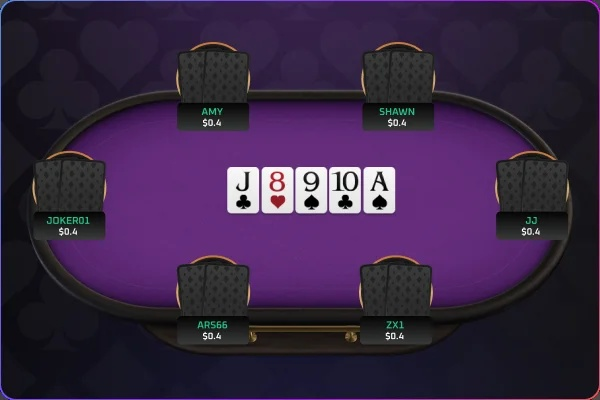
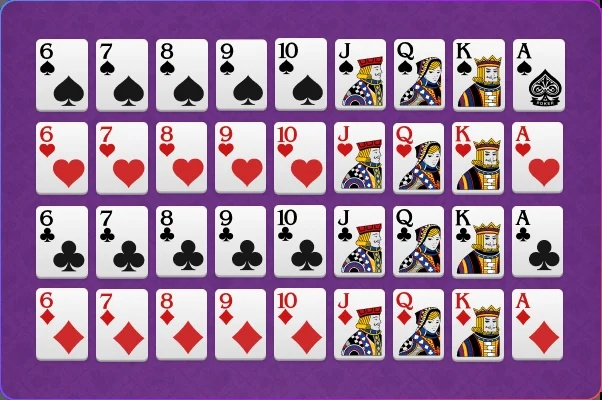
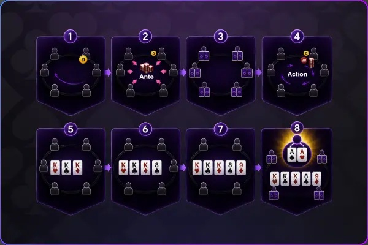
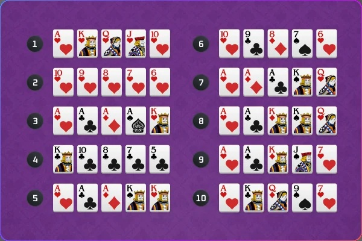

短牌德州撲克（6+）
36 張牌，更快節奏
更快節奏每一手都精彩
6+（Short Deck）採用 36 張牌（移除 2 至 5），提升強牌出現機率與對局節奏。更頻繁的大牌對決、更高的翻盤機會，讓每一輪下注都充滿刺激與策略，帶來截然不同的德州撲克體驗。
遊戲簡介

• 短牌（Short Deck 或 Six Plus Hold’em）是德州撲克的一個變體，遊戲流程與傳統的無限注德州撲克相似，但在牌組和牌力排名上有一些關鍵差異。
• 整局遊戲只玩36張牌，數字2到5的牌都會移除
遊戲規則概要

因為去掉了部分花色牌，使得 ”同花” 在短牌中比 ”葫蘆” 更稀有 → 所以排名更高。
• 使用牌數: 36 張（去掉2~5）
• 手牌張數: 2 張
• 公共牌: 5 張
• 組牌方式: 同德州撲克
• 順子最小牌: A-6-7-8-9（A當作5來用）
• Ace : 同時代表Ace 跟 5
• 牌型排名: 參見下方說明
遊戲流程

短牌的每一局會經歷以下階段：
1. 決定莊位：牌局中順時針依序由每個玩家擔任莊位。
2. 前注：所有玩家支付1BB前注，莊家放置1BB莊位盲注。
3. 發手牌（Hole Cards）：每位玩家獲得2張蓋著的手牌。
4. 翻牌前（Preflop）：玩家開始第一輪行動，從莊位左手邊第一位依序進行。
5. 翻牌圈（Flop）：發出3張公共牌，進入第二輪行動。
6. 轉牌圈（Turn）：發出第4張公共牌，進行第三輪行動。
7. 河牌圈（River）：發出第5張公共牌，最後一輪行動。
8. 攤牌（Showdown）：若有兩人以上未棄牌，比牌型大小，贏家拿走底池。
牌型排名

1. 皇家同花順（Royal Flush）A-K-Q-J-10 同花色，最強牌型
2. 同花順（Straight Flush）五張連號，同花色
3. 四條（Four of a Kind）四張相同點數的牌
4. 同花（Flush）五張同花色，不連號
5. 葫蘆（Full House）三張相同點數 + 一對
6. 順子（Straight）五張連號，不同花色
7. 三條（Three of a Kind）三張相同點數
8. 兩對（Two Pairs）兩組一對
9. 一對（One Pair）一對相同點數
10. 高牌（High Card）沒有任一組合，比最大牌點數
11.